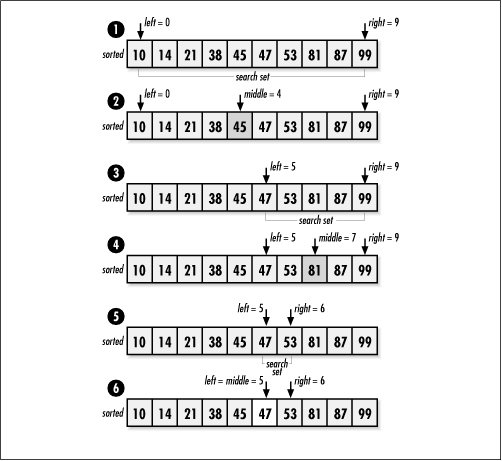

12.19 Implementation and Analysis
of Binary Search
Binary search
works fundamentally by dividing a sorted set of data
repeatedly and inspecting the element in the middle of each
division. In the implementation presented here, the sorted set
of data resides in sorted, a single block of
contiguous storage. The argument target is the
data we are searching for.
This implementation revolves around a single
loop controlled by the variables left and
right, which define the boundaries of the
current set in which we are focusing our search (see Example
12.8). Initially, we set left and
right to and size - 1,
respectively. During each iteration of the loop, we set
middle to the middle element of the set
defined by left and right. If
the element at middle is less than the target,
we move the left index to one element after
middle. Thus, the next set searched is the
upper half of the current set. If the element at
middle is greater than the target, we move the
right index to one element before middle.
Thus, the next set searched is the lower half of the current
set. As the search continues, left moves from
left to right, and right moves from right to
left. The search terminates once we encounter the target at
middle, or when left and
right cross, if the target is not found. Figure
12.8 illustrates this process.

The runtime complexity of binary search
depends on the maximum number of divisions possible during the
searching process. For a set of n elements, we can perform up to lg
n divisions. For binary search,
this represents the number of inspections that we could end up
performing in the worst case: when the target is not found,
for example. Therefore, the runtime complexity of binary
search is O (lg n).
Example 12.8.
Implementation of Binary Search /*****************************************************************************
* *
* ------------------------------ bisearch.c ------------------------------ *
* *
*****************************************************************************/
#include <stdlib.h>
#include <string.h>
#include "search.h"
/*****************************************************************************
* *
* ------------------------------- bisearch ------------------------------- *
* *
*****************************************************************************/
int bisearch(void *sorted, const void *target, int size, int esize, int
(*compare)(const void *key1, const void *key2)) {
int left,
middle,
right;
/*****************************************************************************
* *
* Continue searching until the left and right indices cross. *
* *
*****************************************************************************/
left = 0;
right = size - 1;
while (left <= right) {
middle = (left + right) / 2;
switch (compare(((char *)sorted + (esize * middle)), target)) {
case -1:
/***********************************************************************
* *
* Prepare to search to the right of the middle index. *
* *
***********************************************************************/
left = middle + 1;
break;
case 1:
/***********************************************************************
* *
* Prepare to search to the left of the middle index. *
* *
***********************************************************************/
right = middle - 1;
break;
case 0:
/***********************************************************************
* *
* Return the exact index where the data has been found. *
* *
***********************************************************************/
return middle;
}
}
/*****************************************************************************
* *
* Return that the data was not found. *
* *
*****************************************************************************/
return -1;
} |